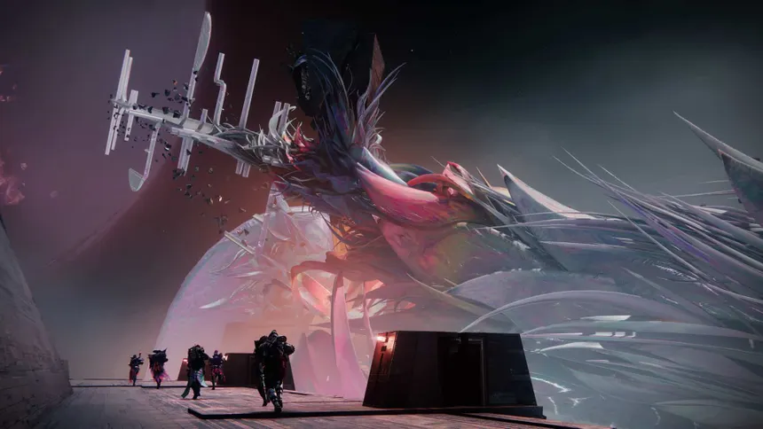

Raids
Raids are the pinnacle activity of Destiny 2. Requiring 6 people to complete, they are made up of various complex puzzles, and give the best loot in the game.

Raids - which are dropped every yearly expansion - feature a set of extremely powerful weapons, armor, and a extremely unique and powerful exotic that can only be obtained from the raid.
Some raid exotics include:
- Divinity
- Whirling Ovation
- Euphony
- One Thousand Voices
Back Home